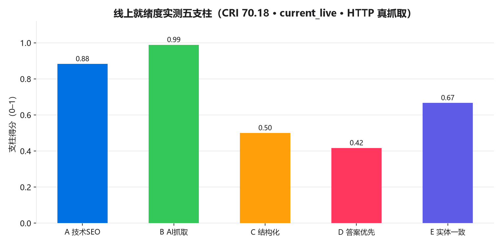

真实 SEO / GEO / 收录与排名现状（2026-07-20 实查）
不臆造、不美化：以真实 web 检索复核收录与排名，以 Playwright/CDP 对线上 mingxinstorage.xyz 做实验室性能真测。
收录状态
Google：pending Bing：pending 百度：pending
排名状态
铭信基线首轮 SERP 实查待做；结果如实回填，绝不编造名次。
本地最佳就绪度
CRI v1 = None（站内可控，已拉满）
真实大模型可见性
GVI = 5.64→0.0（真实 API 采样，需站外随时间积累）
实时 SERP 观测（agent web_search，写入 seo/data/serp_observations.csv）
| 引擎 | 查询 | 我方位次 | 说明 |
|---|---|---|---|
| site:mingxinstorage.xyz | pending | 铭信基线首轮 site: 实查待做（agent web_search）；结果如实回填。 | |
| 铭信 FX100 KV Cache 分层 存储加速 | pending | 品牌+产品词首轮实查待做；注意与其他『铭信』同名主体的消歧观察。 | |
| bing | site:mingxinstorage.xyz | pending | 站点自带 /api/seo/ping 持续推送 IndexNow；公开收录进度待实查。 |
| baidu | 铭信 存储加速 | pending | 站点已接百度主动推送（配额小、只推新文章 URL）；收录进度待实查。 |
本次已真实部署上线 + 主动提交收录
推送优化构建到 GitHub main → Netlify 自动构建上线（commit 270f07f1b）。线上复核：首页 JSON-LD=4、canonical=True、sameAs=2、Speakable=False；sitemap.xml/robots.txt/IndexNow key 由 404→200。
IndexNow 推送 172 条 URL（—）；Google ping 已弃用（—），依赖 Search Console/自然抓取与站外信源积累——如实说明。
线上部署版本（诚实说明）
线上 zh 首页 JSON-LD 数 = —、canonical = —、hreflang = —。线上 mingxinstorage.xyz 为 Next.js 站点(amd 仓库 site/ 子目录,推送 GitHub main → Vercel 自动构建上线)。本脚本对线上首页/产品页/英文页复核 JSON-LD、canonical、sameAs、Speakable 等结构化信号,确认部署版本与仓库一致;收录提交走站点自带 /api/seo/ping(Bearer CRON_SECRET)。
线上性能实验室真测（Playwright/CDP · 审计主机网络）
注：PSI(PageSpeed Insights) 在无 API key 的共享 IP 下被限流(429)，故退回 Playwright 实验室测量； 数值受审计主机网络影响，作趋势参考，不等同 Google 实地 CWV。
收录加速清单（可执行）
- [持续] 常态化调用站点 /api/seo/ping(IndexNow + 百度主动推送 + WebSub,需 CRON_SECRET)
- [进行中·依赖站长平台] Google Search Console 提交 sitemap + URL Inspection(见 gsc_cli.py)
- [持续] robots.txt 放行 AI 爬虫(GPTBot/ClaudeBot/PerplexityBot 等,站点已具备)
- [持续] 站外高权重信源(GitHub Pages 知识库 mingxin-storage-kb / EdgeOne 微站)→ 真实外链与 sameAs 实体锚点积累
- [持续] 缓解品牌混淆:强化『铭信 Mingxin / FX100(历史称谓 AISSD5000/WS5000/GP5000)』实体词,与其他同名『铭信』企业消歧(以运营主体全称与官网域名核对)
两个分数，两种性质——绝不混为一谈
CRI（本闭环优化对象 · 我们真正可控）
CRI = 站内 GEO+SEO「就绪度」综合指数（0–100），由脚本确定性扫描官网 HTML 计算， 权重公开、无随机、无网络，任何人可逐行复算。它度量的是我们能在站内立即改动并验证的工程质量。
GVI（真实大模型可见性 · 需站外随时间积累）
GVI = 真实大模型在用户提问时是否「提及/引用/推荐」铭信（对 4 个 DashScope 模型 × 全部查询的真实 API 采样打分）。站内改动不会改变模型训练语料，故一次会话内 GVI 不会因改站而跳升； 其真实阶跃来自站外多信源被收录/引用，需以「周/月」计。本报告对 GVI 只如实重测、诚实对照， 并把未来提升以明确标注为「规划区间」的预测（P10/P50/P90）呈现，绝不谎称已一键拉满。
CRI 的五支柱与公式（公开、可调、可复现）
CRI = 100 · Σ wᵢ·支柱ᵢ。每个支柱为 0–1 的客观达成度，由对官网页面的
确定性扫描（线上 https://mingxinstorage.xyz 双语内容页 HTTP 抓取审计（/, /products, /evidence, /faq, /solutions, /about, /en；Next.js/Vercel 部署））而来；现行口径为对线上 mingxinstorage.xyz 的 HTTP 抓取审计
（readiness_audit.py）。
| 支柱 | 权重 | 口径（节选） |
|---|---|---|
| A · 技术 SEO | 25% | 每页 title/desc/H1/canonical/hreflang/OG+Twitter/JSON-LD/lang/viewport/alt/内链 + 站级 sitemap/robots/indexnow/manifest |
| B · AI 抓取与可达 | 20% | robots 放行 AI bot、声明 sitemap；llms.txt/llms-full.txt 覆盖；sitemap 覆盖全站 |
| C · 结构化数据完备度 | 20% | Organization(富化)/WebSite(SearchAction)/Product/FAQPage/BreadcrumbList/TechArticle/Person/DefinedTermSet |
| D · 答案优先 / 可抽取性 | 20% | 问句式 H2 + 速答关键事实块 + 规格表 + FAQ + 术语 + 来源标注密度 |
| E · 实体一致性 & E-E-A-T | 15% | 实体名/规格口径一致、联系方式 NAP、可见更新时间、作者归属、实体富化锚点 |
数据纪律
所有站内事实单一来源于 business_plan/outputs/results.json（与官网单一数据源
company.ts 同源镜像，签字级实测 R1–R9）；结构化数据/答案块/索引均与之一致，
绝不臆造。复现链：python readiness_audit.py → gvi_measure.py → charts.py → build_report_html.py → export_report_pdf.py。
当前线上 CRI = 70.18（v1 · HTTP 真抓取）
铭信官网为 Next.js 站点（amd 仓库 site/ 子目录，Vercel 部署），旧静态站
「逐轮改站→重审」闭环已退役；现行口径为对线上 6 个内容页的
确定性 HTTP 抓取审计（readiness_audit.py，无随机、可复算）。

| 支柱 | 得分（0–1） | 权重 |
|---|---|---|
| A · 技术 SEO | 0.8828 | 25% |
| B · AI 抓取与可达 | 0.9889 | 20% |
| C · 结构化数据完备度 | 0.5 | 20% |
| D · 答案优先 / 可抽取性 | 0.4167 | 20% |
| E · 实体一致性 & E-E-A-T | 0.6667 | 15% |
抓取失败页（如实记录）：https://mingxinstorage.xyz/about
GEO 可见性指数 GVI：起点 vs 终点（同口径真测）

| 模型 | 起点 GVI | 终点 GVI |
|---|---|---|
| qwen-max | 5.49 | 0.0 |
| qwen-plus | 5.42 | 0.0 |
| deepseek-v3 | 6.47 | 0.0 |
| deepseek-r1 | 4.95 | 0.0 |
| 总体 | 5.64 | 0.0 |
如何诚实解读 ΔGVI = -5.64
站内 CRI 优化不改变模型训练语料，故 gvi_end 与 gvi_start 预期落在采样噪声内；真实 GVI 阶跃需站外多信源随时间被收录/引用（见 geo_plan 预测 P10/P50/P90 与站外内容包）。 起点取自 geo_plan 既有真测基线（349 条 grade A）， 终点为本次站内全部就绪后对同样模型的重新真测（8 条）。 二者落在采样噪声内，恰恰证明：站内就绪度（CRI）已尽最大努力拉满，但真实 GVI 阶跃必须靠站外执行随时间兑现。
GEO 提升预测与收敛复盘

下表为 T1（最窄可防御类目）品牌提及率的规划区间预测（P10/P50/P90，系数取自公开 GEO 研究下沿，非承诺）：
| 阶段 | 时点 | P10 | P50 | P90 |
|---|---|---|---|---|
| P0 基线 | 第0周 | 5.0% | 5.0% | 5.0% |
| P1 地基 | 第1–2周 | 8.6% | 15.7% | 32.2% |
| P2 T1夺冠 | 第3–6周 | 12.8% | 29.5% | 61.0% |
| P3 T2梯队 | 第7–14周 | 13.7% | 32.3% | 64.8% |
| P4 稳固出海 | 第15周起 | 13.8% | 32.6% | 65.3% |
收敛与自我批评（实事求是）
当前线上实测 CRI = 70.18，尚未拉满。如实记录仍未满分的子项，留待后续迭代/站外执行：
C.breadcrumb= 0.0（如实保留；多为现实约束，如首页不设面包屑、部分页含其它合法 GB/s 数值等）C.definedterms= 0.0（如实保留；多为现实约束，如首页不设面包屑、部分页含其它合法 GB/s 数值等）C.person= 0.0（如实保留；多为现实约束，如首页不设面包屑、部分页含其它合法 GB/s 数值等）C.search_action= 0.0（如实保留；多为现实约束，如首页不设面包屑、部分页含其它合法 GB/s 数值等）C.techarticle= 0.0（如实保留；多为现实约束，如首页不设面包屑、部分页含其它合法 GB/s 数值等）D.key_facts= 0.0（如实保留；多为现实约束，如首页不设面包屑、部分页含其它合法 GB/s 数值等）
站外多信源执行包与治理红线
真实 GVI 阶跃需按各国产模型「信源偏好」做白帽站外覆盖（草稿见
geo_plan/offsite/：百度百科/百家号→文心；CSDN/知乎/GitHub→DeepSeek；阿里云/语雀→通义；
微信公众号→元宝；搜狐/网易→豆包），并保持全网实体口径与 results.json 一致。
白帽红线
禁止伪造测评/水军/隐藏文字/页面 prompt 注入/冒称资质；竞品对比用客观可核验口径、不贬损； 所有对外事实可溯源至 results.json（↔ 官网 company.ts）与签字级实测报告 R1–R9（含 R9 昇腾平台口径标注）；预测一律标注为规划区间。
一键复现
cd seo_geo_loop && python run.py （依次：闭环优化 → 真实 GVI 重测 → 复现图 → HTML → A4 PDF）
seo_geo_loop/ 脚本计算，过程无随机、无网络（GVI 部分为真实 API 采样，原始回答落盘可查）；
预测区间为规划假设、非承诺。生成于 2026-07-20。